Tutorial¶
This tutorial is aimed to those who know the maximum flow problem and its applications to computer vision and graphics. It explains how to use the PyMaxflow library in some key problems, but it assumes that the reader knows the theoretical background of graph-cuts.
Getting started¶
Once you have installed the PyMaxflow library, you can import it as usual:
import maxflow
print maxflow.__version__
A first example¶
The first example consists on constructing and finding the maximum flow of a custom graph:
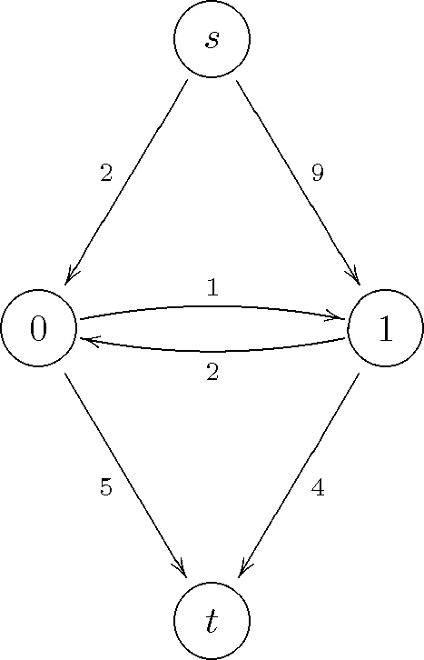{kind=link}
This graph has two terminal nodes, the source  and the sink
and the sink  ,
and two non-terminal nodes, labeled 0 and 1. The code for building
this graph is:
,
and two non-terminal nodes, labeled 0 and 1. The code for building
this graph is:
import maxflow
# Create a graph with integer capacities.
g = maxflow.Graph[int](2, 2)
# Add two (non-terminal) nodes. Get the index to the first one.
nodes = g.add_nodes(2)
# Create two edges (forwards and backwards) with the given capacities.
# The indices of the nodes are always consecutive.
g.add_edge(nodes[0], nodes[1], 1, 2)
# Set the capacities of the terminal edges...
# ...for the first node.
g.add_tedge(nodes[0], 2, 5)
# ...for the second node.
g.add_tedge(nodes[1], 9, 4)
Pretty straightforward, but some details worth mentioning. First, the data type of the capacities can be integer, as in the example, or float. In that case, the graph construction would be:
g = maxflow.Graph[float](2, 2)
Second, the constructor parameters are an initial estimation of the number of nodes and the number of non-terminal edges. These estimations do not need to be perfect, not even approximate. But a better estimation will lead to a better performance in terms of memory usage. Please, consult the documentation of the constructor for more details. In this example, we exactly know how many nodes and non-terminal edges the graph has when we call the constructor.
Third, you do not have to create the terminal nodes. Every graph have implicitly defined both nodes. Moreover, you cannot create more terminal nodes. The non-terminal edges (those connecting two non-terminal nodes) are created with add_edge. The terminal edges (those connecting a non-terminal node to a terminal node) are created with add_tweights.
Now we can find the maximum flow in the graph:
flow = g.maxflow()
print "Maximum flow:", flow
Finally, we want to know the shape of the partition given by the minimum cut:
print "Segment of the node 0:", g.get_segment(nodes[0])
print "Segment of the node 1:", g.get_segment(nodes[1])
The method get_segment returns 1 when the given node belongs to the partition of the source node (i.e., the minimum cut severs the terminal edge from the node to the sink), or 0 otherwise (i.e., the minimum cut severs the terminal edge from the source to the node).
This example is available in examples/simple.py. If you run this code, it will print:
Maximum flow: 8
Segment of the node 0: 1
Segment of the node 1: 0
This means that the minimum cut severs the graph in this way:

The severed edges are marked with dashed lines. Indeed, the sum of the capacities of these edges is equal to the maximum flow 8.
Binary image restoration¶
In this example we will learn to build 4-connected grid layouts with a few calls. This kind of layouts is very common is tasks such as binary image restoration. We take the binary image

and add strong gaussian noise to it:

You can download this image from this page using the right-click menu of your browser. You can load it into Python with:
import numpy as np
import scipy
from scipy.misc import imread
import maxflow
img = imread("a2.png")
We will restore the image minimizing the energy
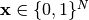 are the values of the restored image,  is the number of pixels. The unary term 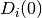 (resp 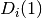)
is the penalty for assigning the value 0 (resp 1) to the i-th pixel. Each
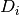 depends on the values of the noisy image, which are denoted as
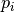:
is the number of pixels. The unary term 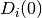 (resp 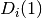)
is the penalty for assigning the value 0 (resp 1) to the i-th pixel. Each
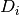 depends on the values of the noisy image, which are denoted as
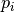:
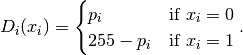
Thus, is low when assigning the label 0 to dark pixels or the
label 1 to bright pixels, and high otherwise.
The value  is the regularization strength. The larger
the smoother the restoration. We fix it to 50.
is the regularization strength. The larger
the smoother the restoration. We fix it to 50.
The maximum flow algorithm is widely used to minimize energy functions of this
type. We build a graph which represents the above energy. This graph has as many
non-terminal nodes as pixels in the image. The nodes are connected in a grid
arrangement, so that the nodes corresponding to neighbor pixels are connected
by a forward and a backward edge. The capacities of all non-terminal edges
is . The capacities of the edges from the source node are set
to , and the capacities of the edges to the sink node are .
We could build this graph as in the first example. First, we would add all the nodes. Then, we would iterate over the nodes adding the edges properly. However, this is extremely slow in Python, especially when dealing with large images or stacks of images. PyMaxflow provides methods for building some complex graphs with a few calls. In this example we review add_grid_nodes, add_grid_edges, which add edges with a fixed capacity to the grid, and add_grid_tedges, which sets the capacities of the terminal edges for multiple nodes:
# Create the graph.
g = maxflow.Graph[int]()
# Add the nodes. nodeids has the identifiers of the nodes in the grid.
nodeids = g.add_grid_nodes(img.shape)
# Add non-terminal edges with the same capacity.
g.add_grid_edges(nodeids, 50)
# Add the terminal edges. The image pixels are the capacities
# of the edges from the source node. The inverted image pixels
# are the capacities of the edges to the sink node.
g.add_grid_tedges(nodeids, img, 255-img)
Finally, we perform the maxflow computation and get the results:
# Find the maximum flow.
g.maxflow()
# Get the segments of the nodes in the grid.
sgm = g.get_grid_segments(nodeids)
The method get_grid_segments returns an array with the same shape than nodeids. It is almost equivalent to calling get_segment once for each node in nodeids, but much faster. For the i-th cell, the array stores False if the i-th node belongs to the source segment (i.e., the corresponding pixel has the label 1) and True if the node belongs to the sink segment (i.e., the corresponding pixel has the label 0). We now get the labels for each pixel:
# The labels should be 1 where sgm is False and 0 otherwise.
img2 = np.int_(np.logical_not(sgm))
# Show the result.
from matplotlib import pyplot as ppl
ppl.imshow(img2)
ppl.show()
The result is:

This is a comparison between the original image (left), the noisy one (center) and the restoration of this example (right):

Complex grids with add_grid_edges¶
Note
This section is a draft. It has to be improved and extended with more examples and figures.
The method add_grid_edges is a powerful tool to create complex layouts. The first argument, nodeids is an array of node identifiers with the shape of the grid of nodes where the edges will be added. The edges to add and their final capacities are computed using the arguments weights and structure.
weights is an array and its shape must be broadcastable to the shape of nodeids. Thus every node will have a associated weight. structure is an array with the same dimensions as nodeids and with an odd shape. It defines the local neighborhood of every node.
Given a node, the structure array is centered on it. Edges are created from that node to the nodes of its neighborhood corresponding to nonzero entries of structure. The capacity of the new edge will be the product of the weight of the initial node and the corresponding value in structure. Additionally, a reverse edge with the same capacity will be added if the argument symmetric is True (by default).
Therefore, the weights argument allows to define an inhomogeneous graph, with different capacities in different areas of the grid. On the other hand, besides defining the local neighborhood of each node, structure enables anisotropic edges, with different capacities depending on their orientation.
The file examples/layout_examples.py and the documentation of maxflow.GraphInt.add_grid_edges() contain several different layouts than can be created with add_grid_edges. A more involved example is in examples/layout_example2.py, where a complex graph is created using several calls to maxflow.GraphInt.add_grid_edges() and maxflow.GraphInt.add_grid_tedges().
| [BOYKOV06] | Graph Cuts in Vision and Graphics: Theories and Applications. Yuri Boykov, Olga Veksler. |